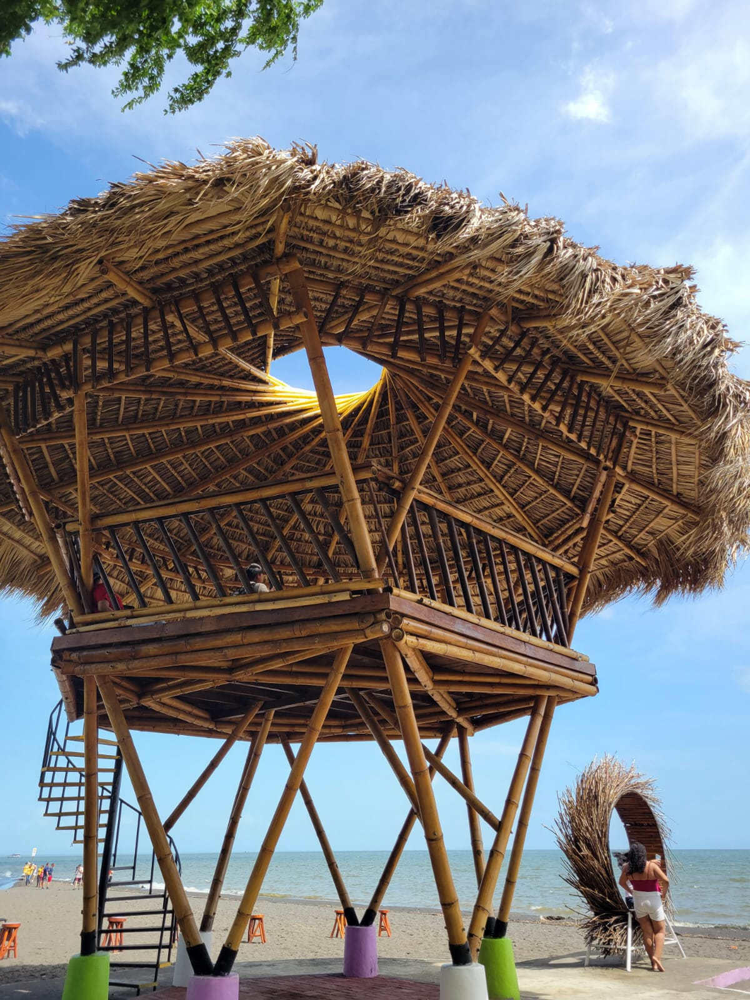
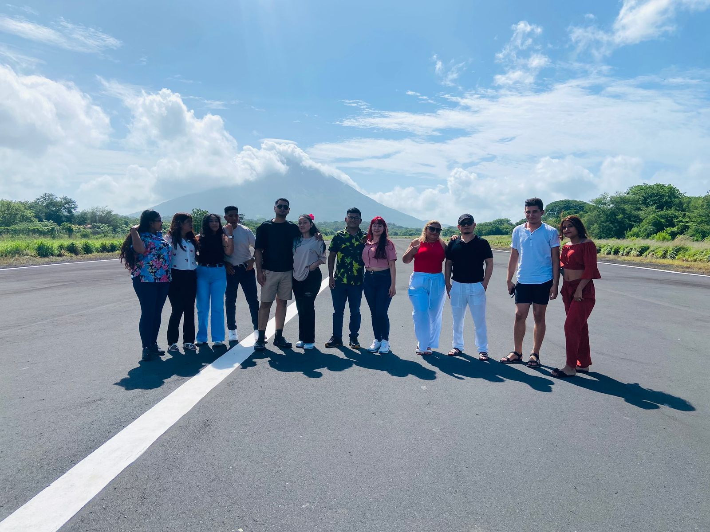
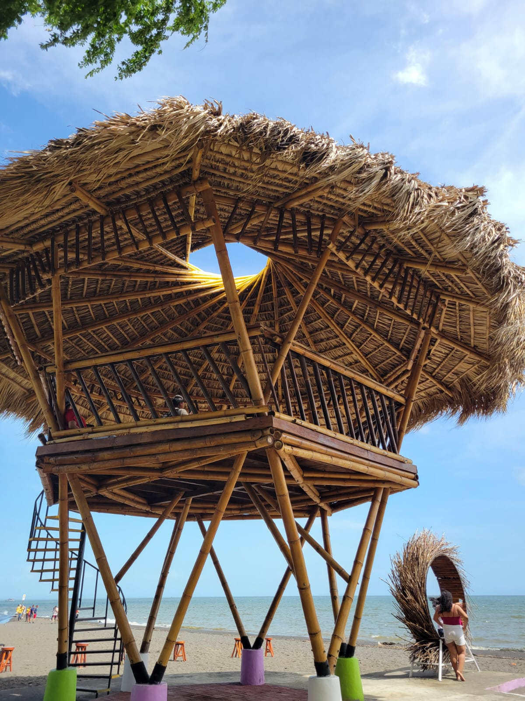
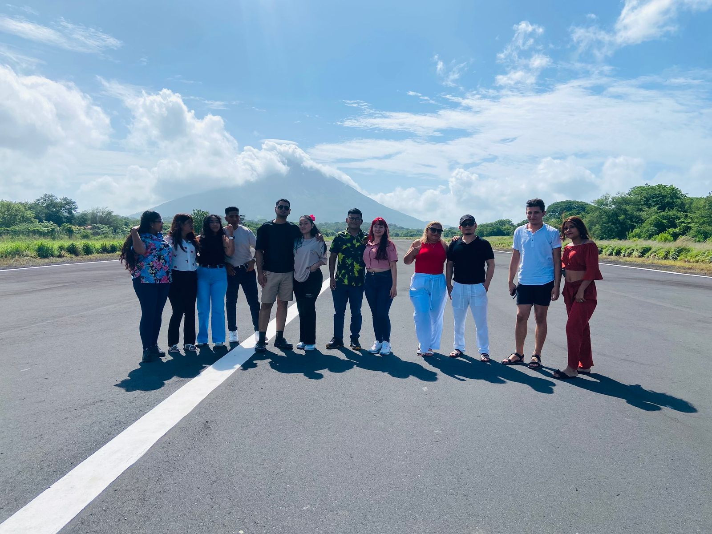
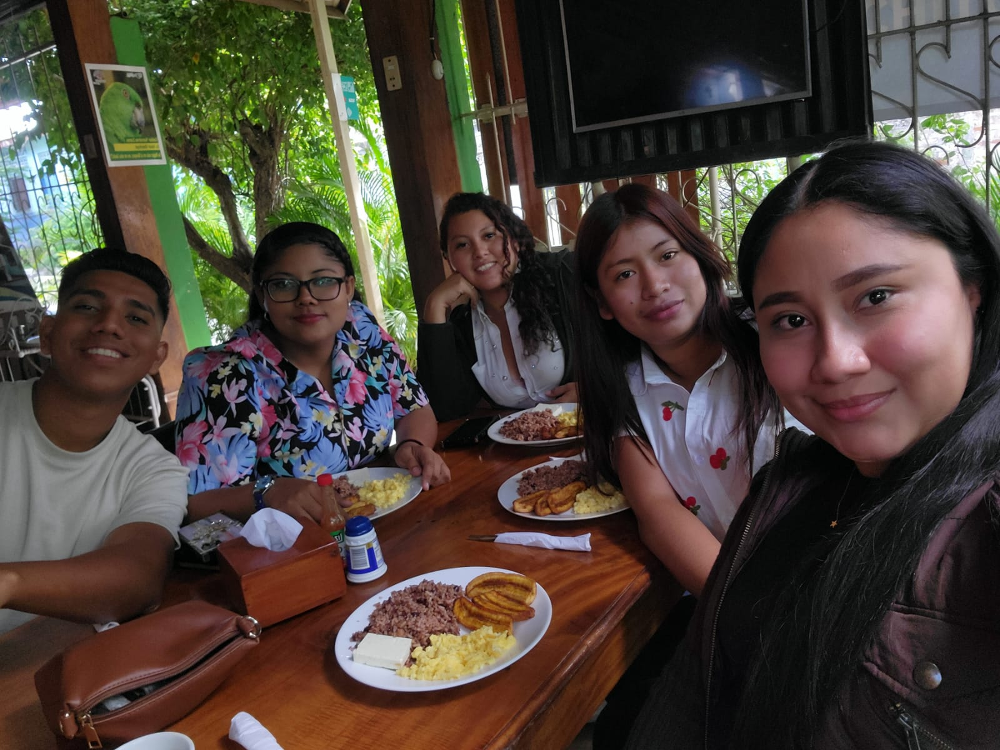
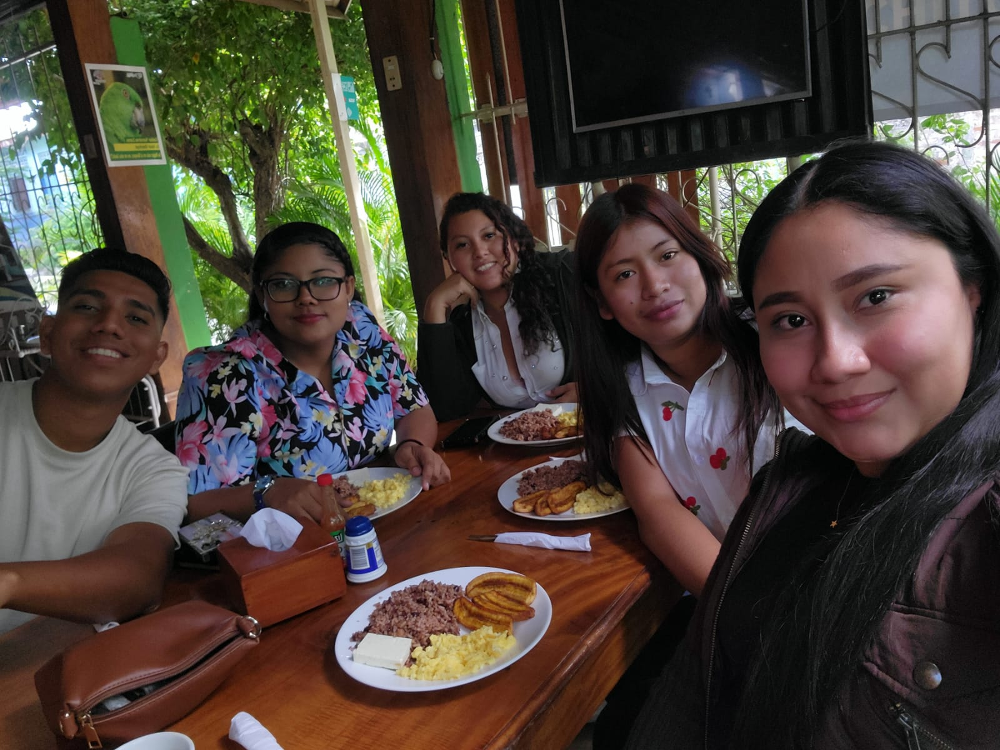
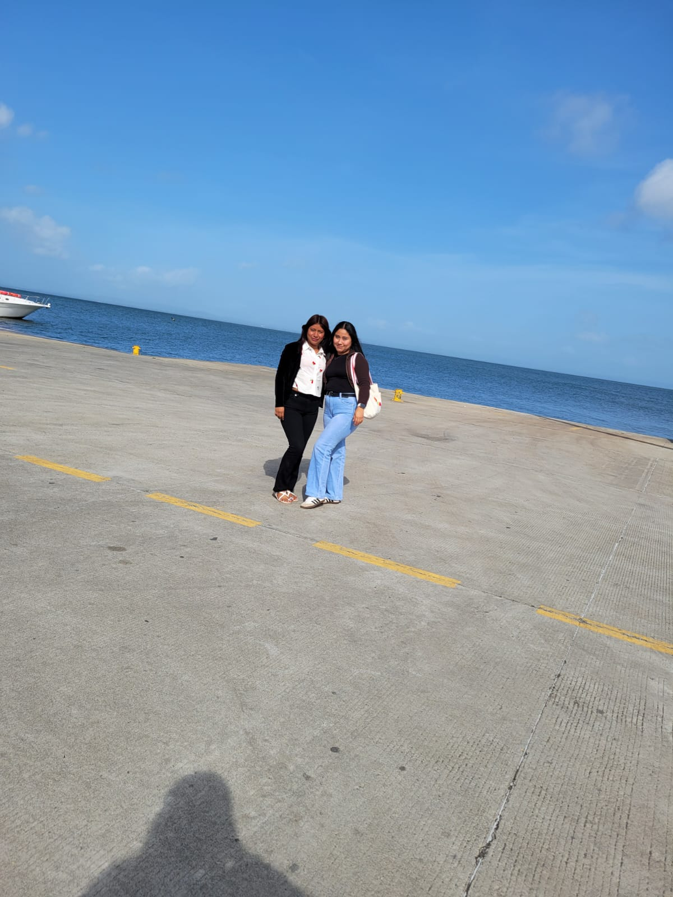
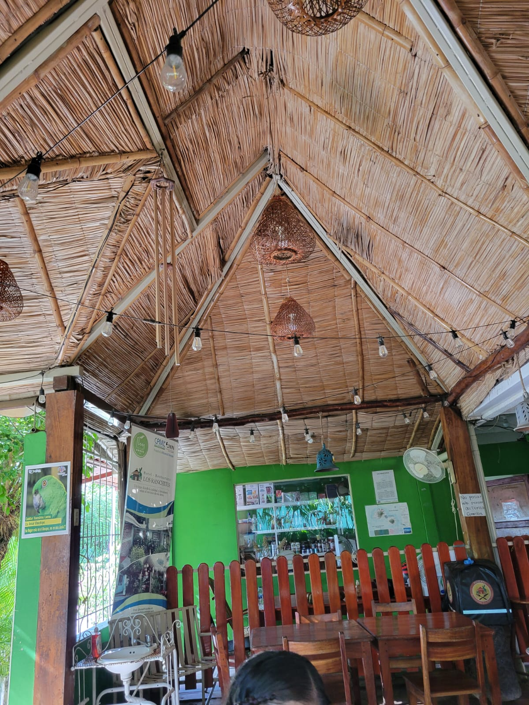
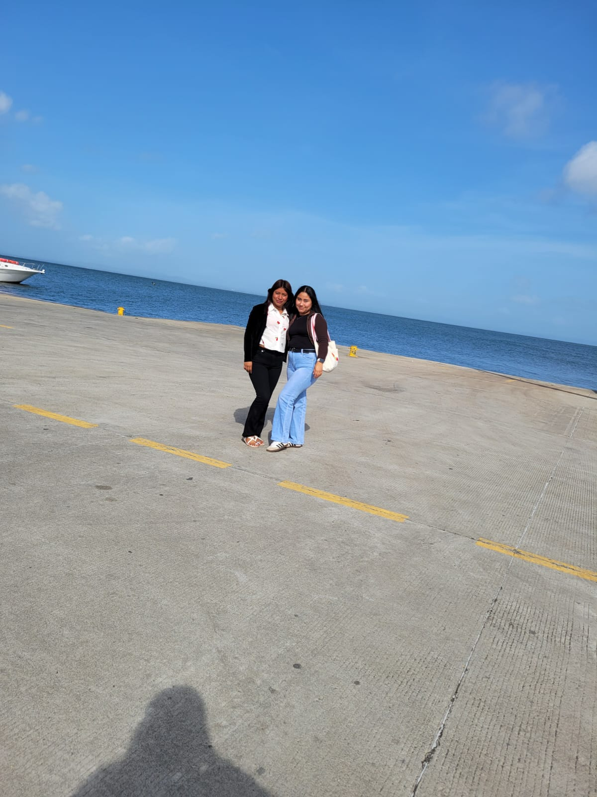
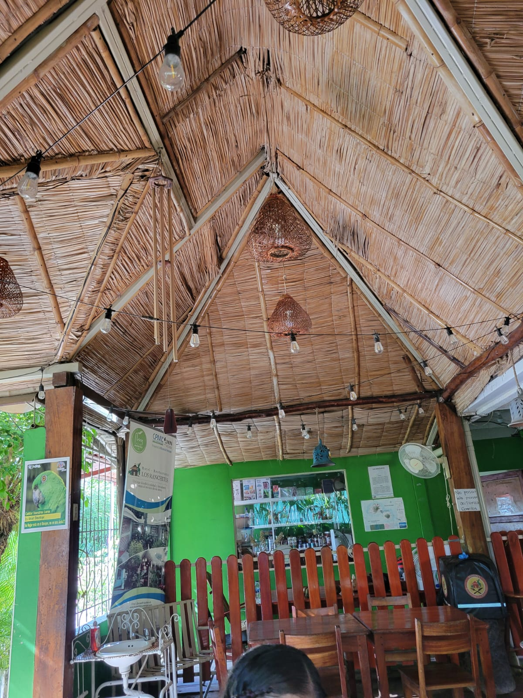

Historia de Isla Ometepe
Isla Ometepe, ubicada en el Lago Cocibolca, está formada por dos majestuosos volcanes: el Concepción y el Maderas. Su nombre proviene del náhuatl: *"ome" (dos) y "tepetl" (cerros)*. Fue habitada desde tiempos precolombinos y es rica en petroglifos, leyendas y cultura indígena.
Atracciones Turísticas
- Subida al Volcán Concepción y Volcán Maderas
- Ojo de Agua: manantial natural cristalino
- Petroglifos y sitios arqueológicos
- Playa Santo Domingo y Charco Verde
- Kayak en el Río Istiam y avistamiento de fauna
Galería Fotográfica
 





 

 



Contáctanos
¿Listo para la aventura? Escríbenos a: visita@ometepe.travel